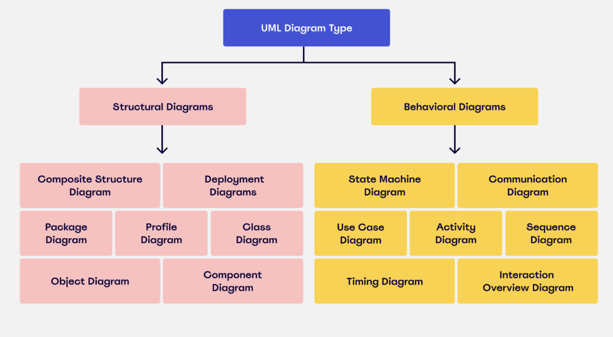

1. Struktuuridiagrammid 1.1 Klassidiagramm (Class Diagram) Kirjeldus: Näitab klasside struktuuri ja nendevahelisi seoseid. 1.2 Objektidiagramm (Object Diagram) Kirjeldus: Näitab klasside konkreetseid eksemplare ja nende vahelist olekut mingil hetkel. 1.3 Komponendidiagramm (Component Diagram) Kirjeldus: Kirjeldab tarkvarakomponentide ja nende vaheliste liideste struktuuri. 1.4 Paigutusdiagramm (Deployment Diagram) Kirjeldus: Illustreerib, kuidas tarkvara töötab riistvarakeskkonnas (nt serverid, sõlmed). 1.5 Pakettdiagramm (Package Diagram) Kirjeldus: Näitab klasside ja nende vaheliste seoste grupeerimist pakettidesse. 1.6 Profiildiagramm (Profile Diagram) Kirjeldus: Kasutatakse UML-i laiendamiseks domeenispetsiifiliste kontseptsioonidega. 2. Käitumisdiagrammid 2.1 Use Case Diagramm (Kasutusjuhtumidiagramm) Kirjeldus: Illustreerib süsteemi kasutajaid (aktorid) ja nende suhtlust süsteemi funktsioonidega. 2.2 Tegevusdiagramm (Activity Diagram) Kirjeldus: Näitab tegevuste voogu süsteemis, sealhulgas otsuseid ja paralleelseid protsesse. 2.3 Oleku diagramm (State Diagram) Kirjeldus: Kujutab süsteemi objekti olekuid ja üleminekuid olekute vahel. 2.4 Interaktsioonidiagrammid 2.4.1 Sekventsdiagramm (Sequence Diagram): Näitab objektide vahelist sõnumite vahetamist aja jooksul. 2.4.2 Kommunikatsioonidiagramm (Communication Diagram): Keskendub objektidevahelistele suhetele ja sõnumitele. 2.4.3 Ajaskaala diagramm (Timing Diagram): Kujutab sündmuste järjestust ja nende ajastust. Interaktsioonide ülevaate diagramm (Interaction Overview Diagram): Kombineerib tegevus- ja sekventsdiagrammi elemente. 3. Muud diagrammid 3.1 Petri võrkude diagramm (Petri Net Diagram) Kirjeldus: Modelleerib protsesside dünaamilist käitumist. 3.2 Kombineeritud diagrammid Mitmed UML-diagrammid võivad olla kombineeritud, et kujutada keerulisi süsteeme.

Mis on UML?
UML